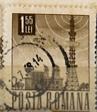
| SOURCE | TITLE| IMAGE MATCH | click to source page |
| HipStamp | Romania 1968 Sc#1979, SG#3521 1.55L Brown Radio Tower CTO. | Europe - Romania, General Issue Stamp / HipStamp | 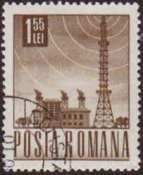 |
| Find Your Stamps Value | Value of tower 155 lei posta romana stamps | 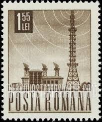 |
| Find Your Stamps Value | Value of posta romana 1.55 lei tower romania stamps | 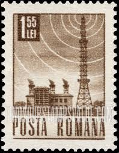 |
| Radiomuseum | Radio manufacturers; Radio makers; set makers | Radiomuseum.org | 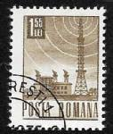 |
| eBay | Briefmarke: Serie Alle Welt: 1,55 Lei, Posta Romana | eBay | 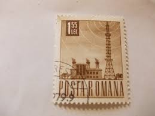 |
| Dreamstime.com | Stamp Printed in Romania Shows Radio Station and Tower Editorial Image - Image of letter, white: 99428410 | 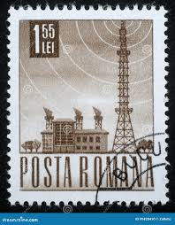 |
| 123RF | Vintage Romanian Postage Stamp Stock Photo, Picture and Royalty Free Image. Image 17327157. | 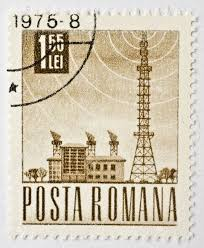 |
| Shutterstock | 4+ Thousand Singapore Post Stamp Royalty-Free Images, Stock Photos & Pictures | Shutterstock | 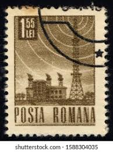 |
| Dreamstime.com | 117 Radio Tower Stamp Stock Photos - Free & Royalty-Free Stock Photos from Dreamstime | 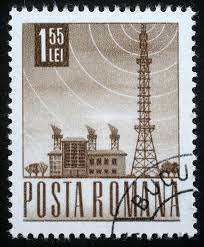 |
| Poshmark | Vintage | Other | Valuable And Or Rare Vintage World Stamps | Poshmark | 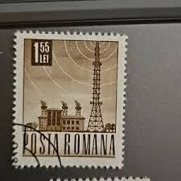 |
| Alamy | Postal communication hi-res stock photography and images - Alamy | 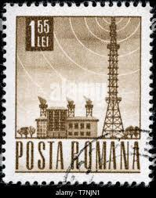 |
| Dreamstime.com | 246 Radio Stamp Station Stock Photos - Free & Royalty-Free Stock Photos from Dreamstime | 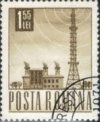 |
| esam.ir | تمبر کلاسیک و ارزشمند رومانی | 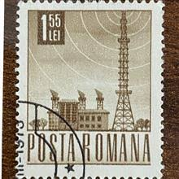 |
| Shutterstock | Moscow Russia Circa November 2018 Post Stock Photo 1238146459 | Shutterstock | 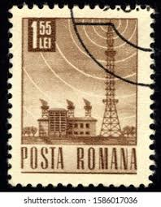 |
| Adobe | Obrázky "Posta Romana" – procházejte fotografie, vektory a videa 24 | Adobe Stock | 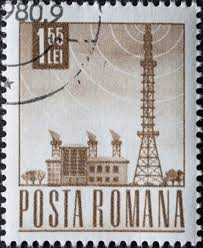 |
| eBay UK | Lot of 23 Stamps Hungary (Magyar Posta)14/Romania,5/ Macau, 4 UK seller #49 | eBay UK | 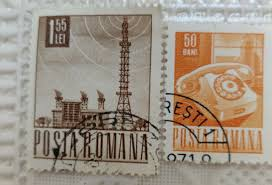 |
| Dreamstime.com | 358 Postal Wave Stamp Stock Photos - Free & Royalty-Free Stock Photos from Dreamstime | 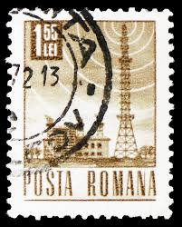 |
| eBay | 1,55 Lei Posta Romana, Briefmarke | eBay | 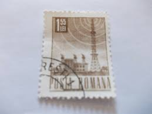 |
| 123RF | Immagini Stock - Stamp Printed In Romania Shows Old Telephone, Circa 1968. Image 47024352 | 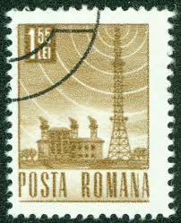 |
| Todocolección | sello rumania posta romana 1,55 l - Compra venta en todocoleccion | 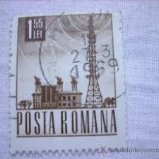 |
| ایسام | تمبر باطله کلاسیک خارجی کد 236 | 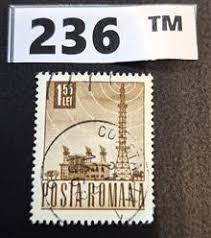 |
| Shutterstock | Romania Circa 1953 Satellite Communication Radio Stock Photo 40991104 | Shutterstock | 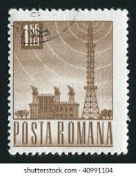 |
| Shutterstock | Postage Icon: Over 26,668 Royalty-Free Licensable Stock Photos | Shutterstock | 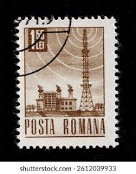 |
| Dreamstime.com | Antique Commercial Radio Station Stock Photos - Free & Royalty-Free Stock Photos from Dreamstime | 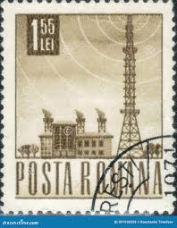 |
| Shopee Indonesia | Jual Used 1968 Terlengkap & Harga Terbaru Februari 2026 | Shopee Indonesia | 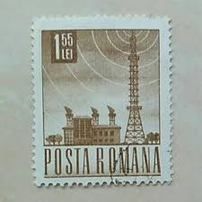 |
| ebid.net | Sverige Sweden 1976 Christmas 1 Kr Used Stamp on eBid United States | 215990041 | 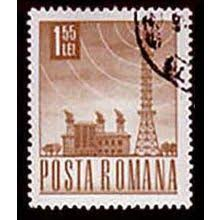 |
| Dreamstime.com | WLW 700 am Radio Station Tower Near Cincinnati, Ohio Editorial Photo - Image of blawknox, advertising: 324074821 | 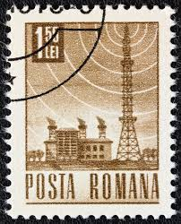 |
| Okazii.ro | Cauti TIMBRU MARCA PR MASINA POSTA ROMANA TRANSPORTURI 2LEI STAMPILAT 1967? Vezi oferta pe Okazii.ro | 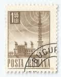 |
| eBay | Romania - 1967 Transport & Communication #6 | eBay | 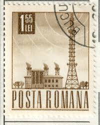 |
| Alamy | Posta romana hi-res stock photography and images - Page 3 - Alamy | 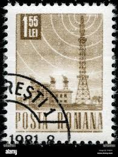 |
| stampsandstuff.net | Stamps from Romania 1960-1969 | 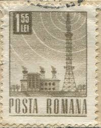 |
| Carousell Malaysia | Postal Romona Unique Old Stamps 5v, Hobbies & Toys, Collectibles & Memorabilia, Stamps & Prints on Carousell | 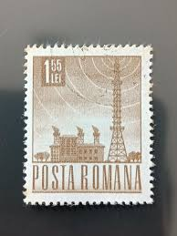 |
| vividagallery.com | Romania Radio Tower Transmission Telecommunication Golden Brown Infrastructure Ornament by Vivida Photo - Vivida Photo | 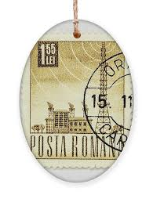 |
| ebid.net | Romania Mi 2649: 1 L. 55 brown Definitive Stamp: Radio Station, comb perf. 13½ on eBid United States | 217588093 | 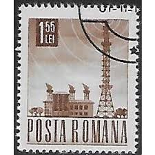 |
| Todocolección | rumanía, 1958, escritores, usado, yvert 1567-15 - Buy Antique stamps of Romania on todocoleccion | 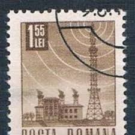 |
| eBay | Romania Stamp Lot - 1950s Industry & Tower (Used NH OG) X12 | eBay | 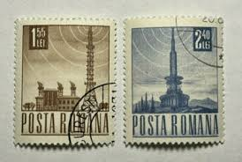 |
| Todocolección | rumania 1967, television, yvert 2357 - Compra venta en todocoleccion | 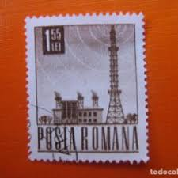 |
| Todocolección | 2538-rumania serie completa reptiles 1965 -yver - Buy Antique stamps of Romania on todocoleccion | 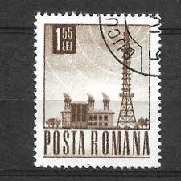 |
| Todocolección | rumania, 10 bani, rey carol i, año 1900. - Buy Antique stamps of Romania on todocoleccion | 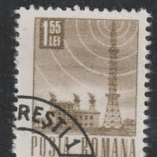 |
| ebid.net | Mi 2957: 1 L. 55 brown Definitive Stamp: Radio Station on eBid United Kingdom | 150497200 | 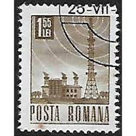 |
| eBay UK | Machine Cancel Used Romanian Stamps for sale | eBay UK | 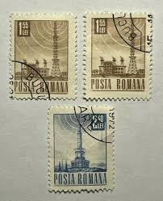 |
| Shutterstock | Romanian Print: Over 2,427 Royalty-Free Licensable Stock Photos | Shutterstock | 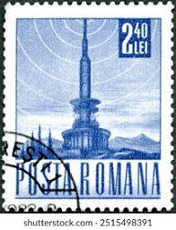 |
| YouTube | Stamp. POSTA ROMANA. Tower television and radio communications. Medium size stamp. Price 1.55 lei - YouTube | 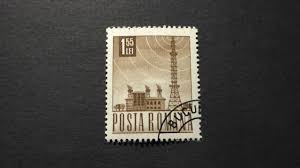 |
| Europa Study Unit | 417 sepac 2013 | 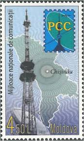 |
| Alamy | HUNGARY - CIRCA 1964: A stamp printed in Hungary depicting Girl Scout Pioneer and Woman Letter Carrier, circa 1964 Stock Photo - Alamy | 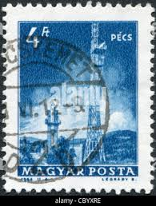 |
| PicClick UK | 1970S COLLECTION OF ROMANIA ROMANIAN POSTA ROMANA STAMPS - FROM STANLEY GIBBONS £10.79 - PicClick UK | 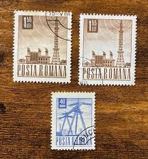 |
| Alamy | Romanian stamp hi-res stock photography and images - Alamy | 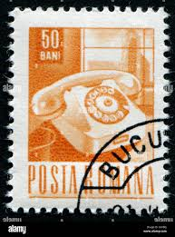 |
| Encyclopaedia Philatelica | Légrády Sándor - Encyclopaedia Philatelica | 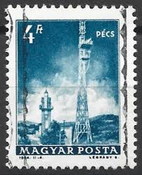 |
| sellosmundo.com | PECS. Hungary Europe ref. 674 | 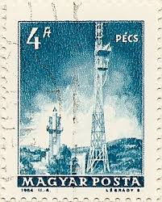 |
| Dreamstime.com | Postage stamp editorial stock photo. Image of message - 210661628 | |
| stampsandstuff.net | Stamps from Hungary 1990-1999 | |
| eBay | Romania - 1967 Transport & Communication #27 | eBay | |
| Shutterstock | 1+ Hundred Letter Pec Royalty-Free Images, Stock Photos & Pictures | Shutterstock | |
| efilatelija.lt | Europe (14) | |
| Dreamstime.com | Romania - Circa 1971: Postage Stamp Issued in the Romania with the Image of the Postbox Collection Service, Circa 1971 Editorial Photo - Image of seal, collection: 391936581 | |
| Shutterstock | Russia Topki June 30 2022 Stamp Stock Photo 2173142141 | Shutterstock | |
| Dreamstime.com | Postage Stamp Hungary, Magyar 1990. Old Antique Telephone Editorial Photo - Image of philatelic, philately: 216936426 | |
| eBay | Specimen, Hungary Sc3222 Telephone, Budapest Exchange | eBay | |
| Europa Study Unit | EUROPA NEWS | |
| Shutterstock | 3+ Thousand Romanian Stamp Royalty-Free Images, Stock Photos & Pictures | Shutterstock |